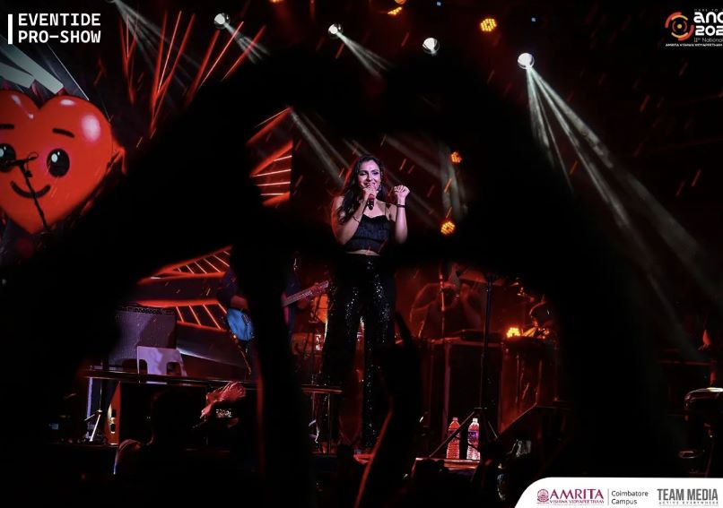
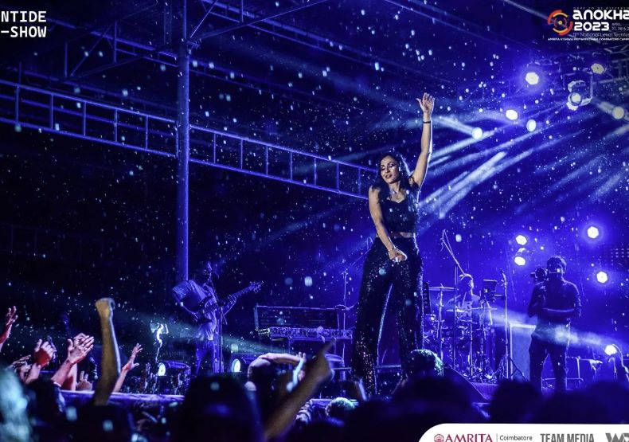

THE LAST NIGHT
KEYA CHATURVEDI 8 JUNE 2023
THE STAR NIGHT!!!! Who doesn't know Andreah Jermiah right? She is famous for her acting and singing career in the tamil and malayalam film industry. And guess what? She performed in Anokha 2023!! What a day to remember
Andrea Maria Jeremiah is an Indian actress, playback singer, and a musician, who works predominantly in Tamil and Malayalam language films. She made her acting debut in Tamil film Pachaikili Muthucharam (2007), and Malayalam debut with Annayum Rasoolum (2013).

Anokha Tech Fest Amrita stands as a testament to the power of technology, innovation, and collaboration. By providing a vibrant platform for showcasing talent, fostering innovation, and promoting entrepreneurship, the fest has become a beacon for budding technocrats and enthusiasts. Anokha Tech Fest Amrita ignites the spark of creativity, fuels the passion for technology, and empowers participants to shape the future. With its unwavering commitment to excellence and social impact, Anokha Tech Fest Amrita continues to inspire and revolutionize the technological landscape, creating a positive ripple effect on society as a whole.
We loved her performance. She was so friendly with all the students. All the students danced with her music. It was also raining that day, which made it more memorable and amazing. All my friends an I were singing loudly and dancing in the rain. We had so much fun. She ended the concert with her last and most famous song 'Oo Solrya' from the film Pushpa.

Anokha Tech Fest Amrita recognizes the importance of nurturing entrepreneurial spirit and supporting start-ups. The fest provides a platform for aspiring entrepreneurs to pitch their ideas to industry experts and investors. It also hosts entrepreneurship-related events, workshops, and mentoring sessions, equipping participants with the necessary knowledge and guidance to translate their ideas into successful ventures. By fostering the spirit of innovation and entrepreneurship, Anokha Tech Fest Amrita contributes to the growth of the start-up ecosystem.